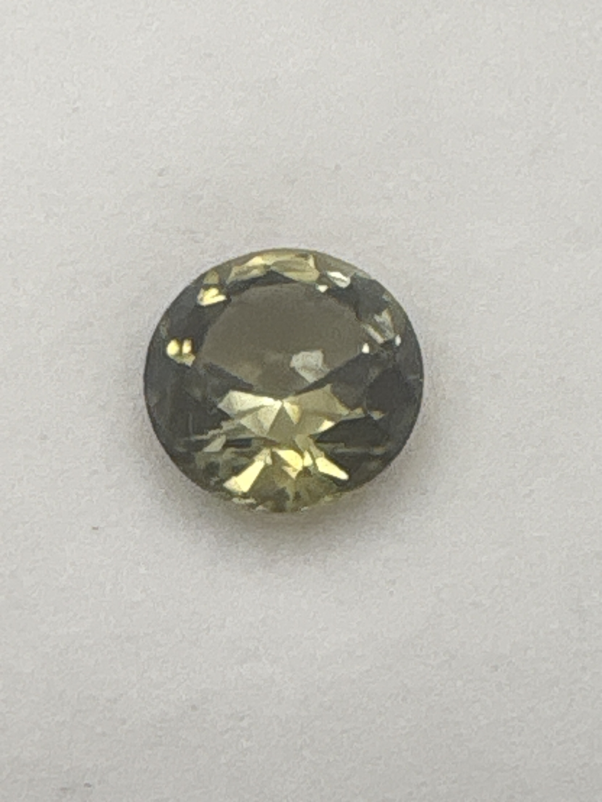

The Gem Drawer › No. 71

A muted olive-khaki green round brilliant.
| Catalogue no. | #71 |
|---|---|
| As labeled | Green Tourmaline (Verdelite) |
| Shape / cut | Round |
| Weight | 2.9 ct |
| Measurements | Not recorded |
| Colour | Muted olive/khaki-green |
| Clarity / condition | Not recorded |
Interested in this stone, or in the collection as a whole? Terry VanWormer can answer questions about it.
Click here to inquireor email Terry directly at maxrebo34@gmail.com